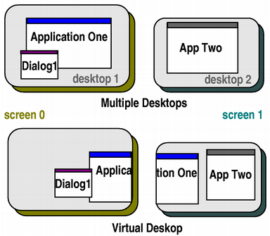

QDesktopWidget Class
The QDesktopWidget class provides access to screen information on multi-head systems. More...
| Header: | #include <QDesktopWidget> |
| qmake: | QT += widgets |
| Inherits: | QWidget |
This class is obsolete. It is provided to keep old source code working. We strongly advise against using it in new code.
Public Functions
| const QRect | availableGeometry(const QWidget *widget) const |
| const QRect | screenGeometry(const QWidget *widget) const |
| int | screenNumber(const QWidget *widget = nullptr) const |
Detailed Description
Systems with more than one graphics card and monitor can manage the physical screen space available either as multiple desktops, or as a large virtual desktop.
This class provides information about the user's desktop, such as its total size, number of screens, the geometry of each screen, and whether they are configured as separate desktops or a single virtual desktop.
Widgets provided by Qt use this class to place tooltips, menus and dialog boxes on the correct screen for their parent or application widgets. Applications can use this class to obtain information that can be used to save window positions, or to place child widgets and dialogs on one particular screen.
Obtaining a Desktop Widget
The QApplication::desktop() function is used to get an instance of QDesktopWidget.
The widget's screenGeometry() function provides information about the geometry of the available screens with. The number of screens available is returned by screenCount, and the screenCountChanged() signal is emitted when screens are added or removed. The screen number that a particular point or widget is located in is returned by screenNumber().
Screen Geometry
To obtain the dimensions of a particular screen, call the screenGeometry() function. On some desktop environments, not all of the screen is available for applications to use; for example, an application dock or menu bar may take up some space. Use the availableGeometry() function to obtain the available area for applications.
QDesktopWidget also inherits the QWidget properties, width() and height(), which specify the size of the desktop. However, for desktops with multiple screens, the size of the desktop is the union of all the screen sizes, so width() and height() should not be used for computing the size of a widget to be placed on one of the screens.
On systems that are configured to use the available screens as a single, large virtual desktop, the virtualDesktop property will be set to true. In this case, the widget's size is usually the size of the bounding rectangle of all the screens.
Use of the Primary Screen
For an application, the screen where the main widget resides is the primary screen. This is stored in the primaryScreen property. All windows opened in the context of the application should be constrained to the boundaries of the primary screen; for example, it would be inconvenient if a dialog box popped up on a different screen, or split over two screens.

In the illustration above, Application One's primary screen is screen 0, and App Two's primary screen is screen 1.
See also QApplication and QApplication::desktop().
Member Function Documentation
const QRect QDesktopWidget::availableGeometry(const QWidget *widget) const
This is an overloaded function.
Returns the available geometry of the screen which contains widget.
See also screenGeometry().
const QRect QDesktopWidget::screenGeometry(const QWidget *widget) const
This is an overloaded function.
Returns the geometry of the screen which contains widget.
int QDesktopWidget::screenNumber(const QWidget *widget = nullptr) const
Returns the index of the screen that contains the largest part of widget, or -1 if the widget not on a screen.
See also primaryScreen.